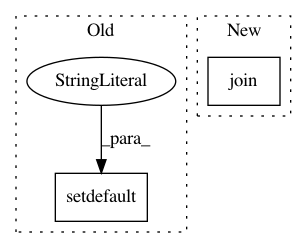

0ad7e3a3f558ea70ea895f7501868d641cff90f6,scipy/special/setup.py,,configuration,#Any#Any#,16
Before Change
+ specfun_src
)
cfg = dict(get_system_info("lapack_opt"))
cfg.setdefault("include_dirs", []).extend([curdir] + inc_dirs + [numpy.get_include()])
cfg.setdefault("libraries", []).extend(
["sc_amos", "sc_cephes", "sc_mach", "sc_cdf", "sc_specfun"]
)
After Change
if python_inc_dirs != plat_specific_python_inc_dirs:
inc_dirs.append(plat_specific_python_inc_dirs)
inc_dirs.append(join(dirname(dirname(__file__)), "_lib"))
inc_dirs.append(join(dirname(dirname(__file__)), "_build_utils", "src"))
// C libraries
cephes_src = [join("cephes","*.c")]
In pattern: SUPERPATTERN
Frequency: 4
Non-data size: 2
Instances
Project Name: scipy/scipy
Commit Name: 0ad7e3a3f558ea70ea895f7501868d641cff90f6
Time: 2020-05-13
Author: pav@iki.fi
File Name: scipy/special/setup.py
Class Name:
Method Name: configuration
Project Name: scipy/scipy
Commit Name: a57f565b683e51cde9c4e28fc6c2e4916c0c306e
Time: 2016-04-05
Author: pav@iki.fi
File Name: scipy/spatial/setup.py
Class Name:
Method Name: configuration
Project Name: arviz-devs/arviz
Commit Name: 2e978146c8e30453c423f8e8e2dba967994805d5
Time: 2019-11-22
Author: ahartikainen@users.noreply.github.com
File Name: arviz/plots/backends/bokeh/bokeh_traceplot.py
Class Name:
Method Name: _plot_trace_bokeh
Project Name: arviz-devs/arviz
Commit Name: 549ed97ebfa47d2fa473453b765d738aecfe14d0
Time: 2019-12-02
Author: ahartikainen@users.noreply.github.com
File Name: arviz/plots/plot_utils.py
Class Name:
Method Name: _create_axes_grid